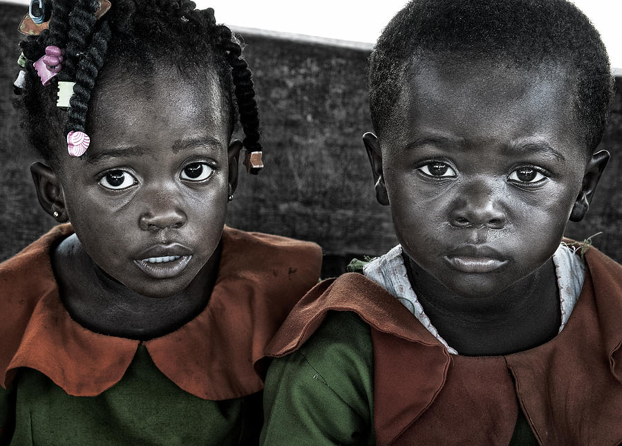
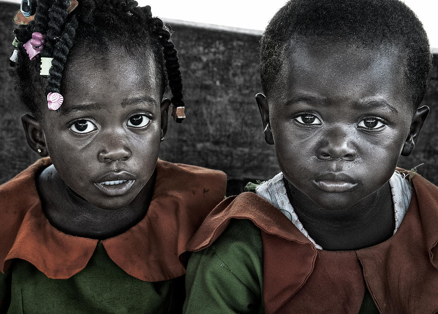
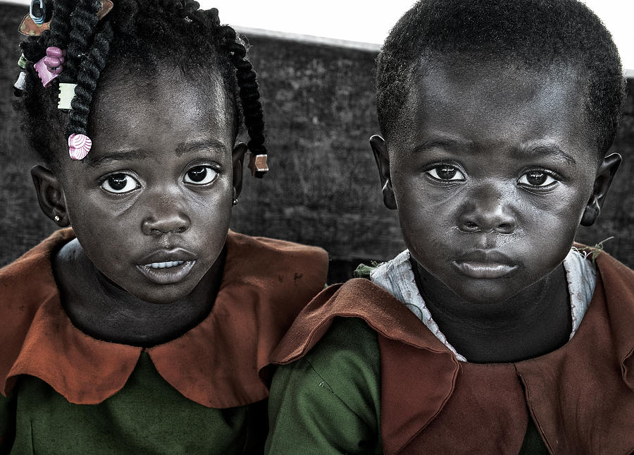

The Street Bridge Foundation is a youth-led non-profit
organization based in Kigali, Rwanda. Its mission is to empower
vulnerable street children by providing them with essential
resources such as education, healthcare, and family support.
Founded during the height of the COVID-19 pandemic, the
organization focuses on reintegrating these children into
society through various programs.
The Street Bridge Foundation is a dynamic, youth-driven
non-profit based in Kigali, Rwanda, with a mission to
transform the lives of street children and their families.
Established to address the challenges faced by vulnerable
children living on the streets, the foundation rescues them
from hazardous environments, re-enrolls them in school, and
works to empower their households with self-sufficiency
skills. The organization believes in community-based
solutions, fostering leadership and empathy among both
children and their parents.

One of its core programs, Project Street+, helps street children build essential skills for the modern world, such as digital literacy and coding. This initiative is designed to give these children a pathway to meaningful careers while boosting their confidence. Another critical program is the My Hub Business Center, which offers entrepreneurial training to parents, teaching them skills like soap making and tailoring. This allows families to gain financial independence, helping reduce the number of children on the streets by strengthening their homes. Additionally, the Here4U Program connects girls and their mothers with sexual and reproductive health education, emphasizing the importance of making reusable sanitary products, which further promotes self-sufficiency and health awareness.